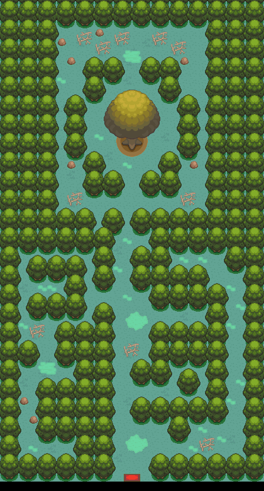

004 钢铁与黑曜
一句话目标：追上阿笔，与他一起追查桐树林里那只长着岩石斧头、疯狂砍树的神秘虫宝可梦，弄清他和巨钳螳螂的心结。
接取地点
- 接取场景正文恢复于登记名 桧皮镇 的地图
47:0（场景引用的对象 localId 1＝阿笔、localId 34＝巨钳螳螂，与该地图对象表一致）。[地图] - 正文提示玩家前往 桐树林（地图
1:121）。[地图] - 地图入口未确认：接取场景不证明其地图入口与坐标，正文中不代入推断坐标；下文坐标仅取地图页登记值。
准备条件
- 未定位（正文未显示前置道具/物种/进度要求）。
操作步骤
- 找到阿笔。他正为巨钳螳螂无法超级进化而苦恼，先低声念白：“不行……还是没反应！”
- 他注意到玩家：“啊，是[玩家/变量]啊！让你见笑了……身为虫属性道馆的馆主，我却一直没法让巨钳螳螂超级进化……究竟是哪里出了问题呢？”
- 一名报信者赶来：“不好了！桐树林里出现了一只长着岩石斧头的虫子，正在疯狂砍树！”
- 阿笔当即决定前往：“长着岩石斧头的虫子？难道是新发现的宝可梦？！巨钳螳螂，我们走！”随后他与巨钳螳螂离开现场。
- 显示 接受任务:<黑曜与钢铁>，并提示：“那只长着岩石斧头的虫子……你也去看看吧。”——正文指向桐树林方向，玩家应前往调查。
交付检查
- 未定位：本包只恢复了接取场景；桐树林里的调查、与那只虫宝可梦的对峙及收尾均未出现在包内。
- 如实记录：包内把旗标 2970 标注为完成旗标，它在接取场景中段即被置位；此处只作事实登记，不据此推断剧情已完成。
奖励
- 未定位（本包无 additem / addmoney / addvar 奖励指令）。
容易卡住的位置
- 接取横幅原文写作“黑曜与钢铁”，与目录任务名“钢铁与黑曜”词序相反，属原文用词。
- 场景所在地图登记名为“桧皮镇”，与正文提示的“桐树林”不是同一张图，接取与调查跨地图。
- 地图入口脚本的接线未确认，请勿用坐标臆测入口；想知道具体入口需另行取证。
来源与待补字段
- 来源包：
data/quest_packets_expanded/004.json。 - 待补字段：桐树林调查与完成场景；接取场景的地图入口；奖励；旗标 5446、5774、2971–2973 的语义。
技术证据（脚本与旗标映射）
- 接取场景
0x09CD3362（至end）：callasm→阿笔念白（使役编号 0x8004=258）→玩家/阿笔对白→clearflag 2969→addobject 43、movesprite 43,13,12（报信者）→报信“岩石斧头的虫子”→阿笔“我们走！”→removeobject 1/removeobject 34→setflag 2970(包内标为完成旗标)、setflag 2971、setflag 2972→“接受任务:<黑曜与钢铁>”→“你也去看看吧。”→setflag 2969(接取旗标)。 - 状态切换旗标脚本：
0x08EEA9E8（setflag 2969；依 5774 →0x08EEA9F9或setflag 2970）、0x08EEA9F9（setflag 5446；依 2972 →0x08EEAA0E或clearflag 2970）、0x08EEAA0E（依 2973 →0x08EEAA1F或setflag 2970+setflag 2971）、0x08EEAA1F（setflag 2970+clearflag 2971+clearflag 5446）。 - 对象文字
0x08EE6D01（巨钳螳螂）：“巨钳螳螂好像失去了信心……”。 - 本场景为
supplemental_branch_candidate：只证明分支正文，不证明地图入口。
地点地图
共享RGB底图；点击可缩放定位。数字对应本页相关地点，不代表地图上全部事件。
桧皮镇

1 钢铁与黑曜（13,16）
桐树林


地图范围记录：当前资料没有精确人物／遭遇坐标。